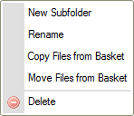

Kontextov茅 menu je vyskakovac铆 menu, kter茅 je zobrazeno kdykoliv kliknete prav媒m tla膷铆tkem my拧i na soubor nebo slo啪ku uvnit艡 rozhran铆 CKFinder, pou啪ijte kl谩vesu Menu/Application na Va拧铆 kl谩vesnici, nebo kl谩vesovou zkratku (Ctrl+)Shift+F10. D谩v谩 V谩m p艡铆stup do operac铆 pr暖zkumn铆ka soubor暖, kter茅 jsou dostupn茅 pro dan媒 typ objektu.
Kontextov茅 menu m暖啪e b媒t tak茅 otev艡eno kliknut铆m na ikonu 拧ipky dol暖
( ),
kter谩 je dostupn谩 v n臎kter媒ch prost艡ed铆ch nebo v prohl铆啪e膷铆ch mobiln铆ch telefon暖 vedle n谩zvu
zvolen茅 slo啪ky nebo v r谩me膷c铆ch souboru, tak jak je zobrazeno na obr谩zku n铆啪e.
),
kter谩 je dostupn谩 v n臎kter媒ch prost艡ed铆ch nebo v prohl铆啪e膷铆ch mobiln铆ch telefon暖 vedle n谩zvu
zvolen茅 slo啪ky nebo v r谩me膷c铆ch souboru, tak jak je zobrazeno na obr谩zku n铆啪e.

Ka啪d茅 kontextov茅 menu se st谩v谩 z 艡ady mo啪nost铆 (p艡铆kaz暖), kter茅 mohou b媒t zvoleny, aby byla provedena ur膷it谩 operace, kter茅 jsou jim p艡id臎leny.
Pozn谩mka: N臎kter茅 mo啪nosti kontextov茅ho menu mohou b媒t zak谩z谩ny (a proto jsou za拧edl茅), v z谩vislosti na nastaven铆ch CKFinder, kter茅 vy啪aduje V谩拧 spr谩vce syst茅mu.
Abyste provedli operaci uvedenou v kontextov茅m menu, klikn臎te na ni lev媒m tla膷铆tkem my拧i. Kontextov媒m menu se m暖啪ete tak茅 pohybovat pomoc铆 kl谩ves 艩ipka nahoru a dol暖 nebo kombinacemi Shift+Tab a Tab. Jakmile je mo啪nost vybr谩na, m暖啪ete j铆 zvolit kl谩vesou Mezern铆k nebo Enter. Pokud je mo啪nost za拧edl谩, nen铆 dostupn谩, proto啪e nejsou spln臎ny ur膷it茅 podm铆nky (nap艡. mus铆te m铆t syst茅mov谩 opr谩vn臎n铆 pro proveden铆 jist媒ch zm臎n souboru nebo slo啪ky).
Menu je 艡铆zeno podle kontextu, co啪 znamen谩, 啪e v n臎m zobrazen茅 mo啪nosti z谩vis铆 na objektu, kter媒 vyberete. N谩sleduj铆c铆 jsou menu, na kter茅 m暖啪ete narazit p艡i pr谩ci se standardn铆 instalac铆 CKFinder.
Je zobrazeno p艡i kliknut铆 na slo啪ku v Panelu slo啪ek prav媒m tla膷铆tkem my拧i (nebo pou啪it铆m kl谩vesov媒ch zkratek, kter茅 jsou pops谩ny v媒拧e):

Je zobrazeno p艡i kliknut铆 na soubor v Panelu souboru prav媒m tla膷铆tkem my拧i (nebo pou啪it铆m kl谩vesov媒ch zkratek, kter茅 jsou pops谩ny v媒拧e):